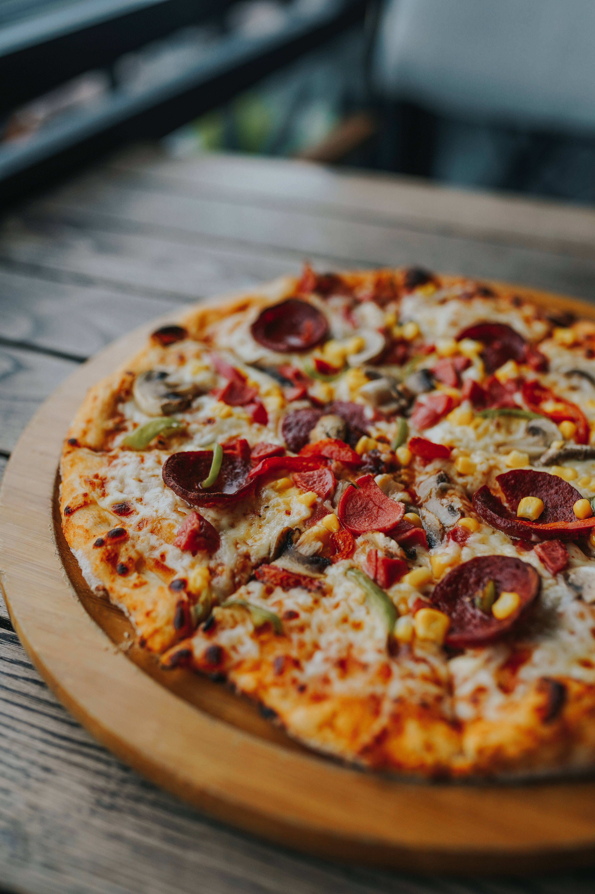

Malzemeler
Hamuru İçin Malzemeler:
- 5 Su Bardağı Un
- 1 Paket İnstant Maya (ya da Yarım Paket Yaş Maya)
- 1 Yemek Kaşığı Toz Şeker
- Yarım Yemek Kaşığı Tuz
- 4 Yemek Kaşığı Zeytinyağı
- 2 Su Bardağı Ilık Su
Sosu İçin Malzemeler:
- 2 Su Bardağı Domates Sosu
- 2 Yemek Kaşığı Zeytinyağı
- 1 Çay Kaşığı Kuru Fesleğen
- 1 Çay Kaşığı Kekik
Üzeri İçin Malzemeler:
- Mozzarella Peyniri
- Kaşar Peyniri
- Sucuk
- Sosis
- Domates Kurusu
- Mantar
- Mısır

Tarif
- Unu yoğurma kabına alalım ve ortasını havuz şeklinde açalım.
- Unun ortasına instant maya, şeker, tuz, zeytinyağı ve ılık suyu yavaş yavaş ilave ederek hamurumuzu yoğurmaya başlayalım. İnstant maya yerine yarım paket yaş mayada kullanabilirsiniz.
- Yumuşak kıvamlı ele yapışmayan bir hamur elde edelim.
- Toparlanan hamurumuzun üzerini streç film örterek yaklaşık 30 dk kadar mayalanmaya bırakalım.
- Mayalanan hamurun üzerini açalım ve un serptiğimiz tezgaha hamuru alalım.
- Elimizle yine toparlayıp havasını aldıktan sonra 2 eşit parçaya bölelim. Eğer ince hamurlu pizza hazırlamak istiyorsanız aynı hamuru 3 parçaya da bölebilirsiniz.
- Kestiğimiz parçayı beze haline getirerek un serptiğimiz tezgahta merdane yardımıyla açalım. Hafifçe un serperek merdaneye yapışmamasını sağlayabilirsiniz.
- Açtığımız hamuru pizza tepsisine almadan önce boyutu uygun mu diye kontrol edelim.
- Açtığımız hamuru unladığımız pizza tepsisine alalım ve elimizle etrafını düzeltelim.
- Dilerseniz normal fırın tepsisine pişirme kağıdı sererek veya altına mısır unu serperek de hazırlayabilirsiniz.
- Bir çatal yardımıyla hamurumuzun tüm yüzeyine delikler açalım böylelikle hamur pişerken kabarmayacaktır.
- Pizza tepsisini önceden ısıttığımız 200° fırına sürerek hamurumuzu 10 dk pişirelim.
- Hamurumuz pişerken pizzanın sosu için domates sosu, zeytinyağı, kuru fesleğen ve kekiği ekleyerek güzelce karıştıralım.
- Yarı pişen hamurumuzu fırından alıp hazırladığımız sosu üzerine bolca sürelim. Kenarlarına doğruda güzelce sürersek kenarlarıda daha güzel kızaracaktır.
- Domates sosunun üzerine bolca mozzarella peyniri rendesi veya kaşar peyniri rendesini yerleştirelim.
- Üzerine tercihe göre dilimlenmiş sucuk, dilimlenmiş sosis, domates kurusu,dilimlenmiş mantar ve mısır tanelerini ekleyelim.
- Son olarak pizzamızı tekrar fırına sürelim ve 200° fırında 20 dk daha pişmeye bırakalım.